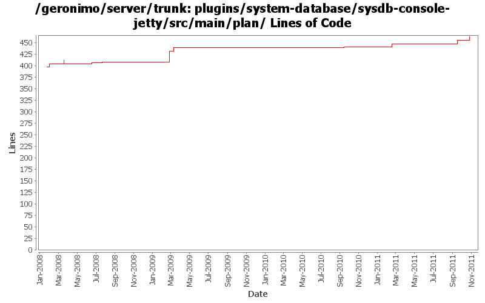

[root]/plugins/system-database/sysdb-console-jetty/src/main/plan

| Author | Changes | Lines of Code | Lines per Change |
|---|---|---|---|
| Totals | 19 (100.0%) | 93 (100.0%) | 4.8 |
| djencks | 4 (21.1%) | 31 (33.3%) | 7.7 |
| violalu | 2 (10.5%) | 16 (17.2%) | 8.0 |
| dwoods | 5 (26.3%) | 16 (17.2%) | 3.2 |
| genspring | 3 (15.8%) | 10 (10.8%) | 3.3 |
| jbohn | 1 (5.3%) | 8 (8.6%) | 8.0 |
| rwonly | 1 (5.3%) | 6 (6.5%) | 6.0 |
| linsun | 2 (10.5%) | 3 (3.2%) | 1.5 |
| gawor | 1 (5.3%) | 3 (3.2%) | 3.0 |
GERONIMO-6202 tranql update
8 lines of code changed in 1 file:
GERONIMO-5209 add tranql xa for db2 iseries
8 lines of code changed in 1 file:
GERONIMO-5597 Reenable database-related admin console portlets (thanks Fang Sheng Hao for the patch!)
6 lines of code changed in 1 file:
GERONIMO-5584 identify basic set of navigation items, patch from Chi Run Hua.
2 lines of code changed in 1 file:
GERONIMO-4950 Improve usability of Geronimo Console, thanks Chi Runhua for the patch !
4 lines of code changed in 1 file:
GERONIMO-4994 To support multiple level navigation tree in geronimo web console.
4 lines of code changed in 1 file:
GERONIMO-4297 - Include TranQL connector for Oracle RAC
8 lines of code changed in 1 file:
GERONIMO-4279, GERONIMO-4365 include tranql informix and sqlserver2000,2005 wrappers
24 lines of code changed in 1 file:
GERONIMO-4405 Postgresql new drives would not be listed in Drive Jars list and download driver list. Thanks to Rex Wang for the patch (which I also applied to the Jetty console plan.
2 lines of code changed in 1 file:
GERONIMO-4225 refactor patch to keep DB Manager -> Run SQL db centric while adding an init-param so we can also have a datasource centric DB Pools -> Run SQL instance from the same code
1 lines of code changed in 1 file:
GERONIMO-4317 - SQL jdbc driver class name is wrong in db pool creation wizard
2 lines of code changed in 1 file:
GERONIMO-4145 Additional Admin Console navigational icons. Merged in from 2.1.2.
3 lines of code changed in 1 file:
change to DB2 XA since it uses the TranQL XA Resource Adapter for DB2
1 lines of code changed in 1 file:
console icons are back (GERONIMO-3562)
3 lines of code changed in 1 file:
undo add of tranql-connector-db2-local
1 lines of code changed in 1 file:
added missing tranql-connector-db2-local
9 lines of code changed in 1 file:
GERONIMO-1775 2nd internationalization patch from YunFeng Ma, with some spelling corrections
7 lines of code changed in 1 file:
GERONIMO-3596 upgrade to newest mysql tranql wrappers and resurrect the db config gbeans that got lost in 2.0.2
0 lines of code changed in 2 files: